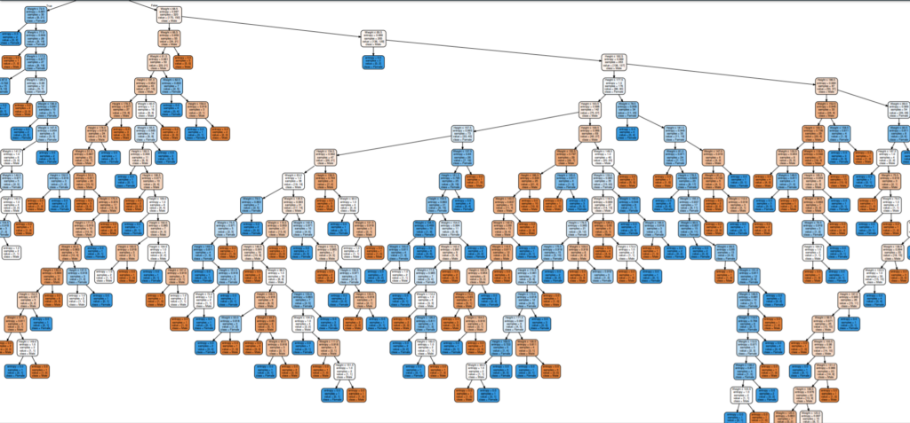
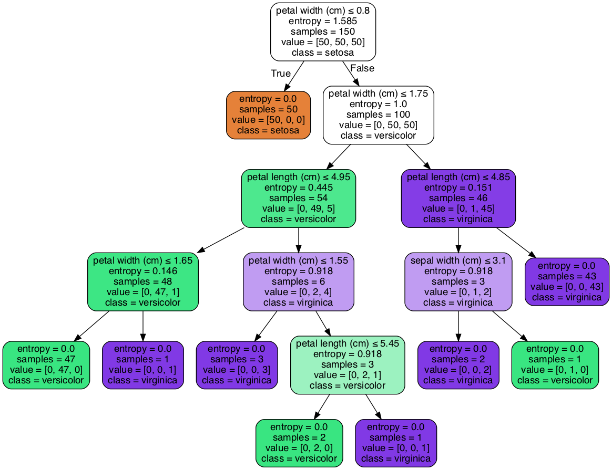
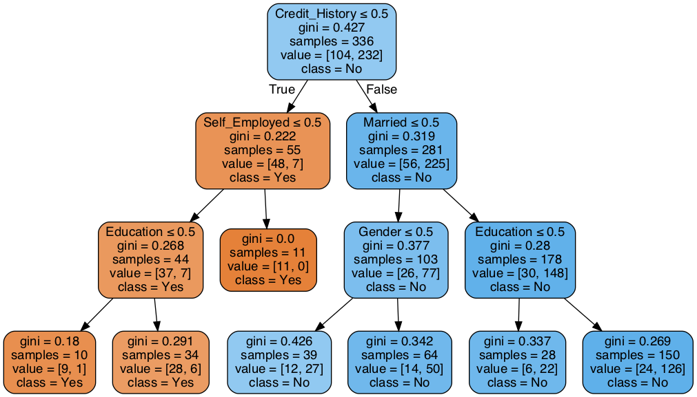
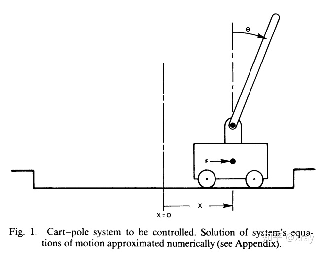
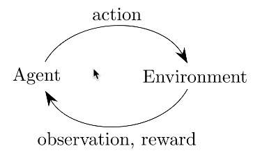

AI for TNFSH: 從入門到入土
Table of Contents
1 人工智慧簡介
1.1 Chat robot
1.1.1 ELIZA
1.1.2 ALICE
1.1.3 Mitsuku
2 背景知識
3 監督式學習
3.1 最短距離分類器
1: import math 2: #from statistics import mean 3: 4: 5: 6: # importing reduce() 7: from functools import reduce 8: 9: def Average(lst): 10: avgx = 0 11: avgy = 0 12: for (x, y) in lst: 13: avgx += x 14: avgy += y 15: return avgx/len(lst), avgy/len(lst) 16: 17: def ed(lst, x, y): 18: dist = 0 19: for (lx, ly) in lst: 20: dist += (x - lx)*(x - lx) + (y - ly)*(y - ly) 21: return math.sqrt(dist) 22: 23: groupA = [[4, 6] ,[5,7] ,[5,8] ,[5.8,6] ,[6,6] ,[6,7] ,[7,5] ,[7,7] ,[8,4] ,[9,5]] 24: groupB = [[2,2] ,[4,2] ,[4,4] ,[5,4] ,[5,3] ,[6,2]] 25: 26: tarx = 5 27: tary = 5 28: 29: centerX, centerY = Average(groupA) 30: sdA = (tarx - centerX)*(tarx - centerX) 31: centerX, centerY = Average(groupB) 32: sdB = (tarx - centerX)*(tarx - centerX) 33: 34: if sdA < sdB: 35: print("A") 36: else: 37: print("B") 38: 39: print(ed(groupA, tarx, tary)) 40: print(ed(groupB, tarx, tary)) 41: 42:
B 7.851114570556208 6.708203932499369
3.2 KNN實作
K-NearestNeighbor分類算法是機器學習裡監督類學習中最簡單的方法之一,由Cover和Hart在1968年提出。kNN算法的核心思想是如果一個樣本在特徵空間中的k個最相鄰的樣本中的大多數屬於某一個類別，則該樣本也屬於這個類別，並具有這個類別上樣本的特性。
KNN為 lazy learner(惰性學習器)的典型例子，所謂惰性是指它不會從「訓練數據集」中學習出「判別函數」(discriminative function)，它的作法是把「訓練數據集」記憶起來。其步驟如下：
- 選定 k 的值和一個「距離度量」(distance metric)。
- 找出 k 個想要分類的、最相近的鄰近樣本。
- 以多數決的方式指定類別標籤。
3.2.1 鳶尾花分類問題
3.2.1.1 DataSet
收集了3種鳶尾花的四個特徵，分別是花萼(sepal)長寬、花瓣(petal)長寬度，以及對應的鳶尾花種類。

Figure 1: 鳶尾花的花萼與花瓣
3.2.1.2 Mission
輸入花萼和花瓣數據後，推測所屬的鳶尾花類型。

Figure 2: 三種鳶尾花
3.2.2 實作
讀取資料集
1: from sklearn import datasets 2: 3: # 讀入資料 4: iris = datasets.load_iris() 5: print(iris.DESCR)
取出特徵與標籤
1: x = iris.data 2: y = iris.target 3: print(x[:5]) 4: print(y[:5])
資料觀察
1: import matplotlib.pyplot as plt 2: import pandas as pd 3: import seaborn as sns 4: #把nupmy ndarray轉為pandas dataFrame,加上columns title 5: npx = pd.DataFrame(x, columns=['fac1','fac2','fac3','fac4']) 6: npy = pd.DataFrame(y.astype(int), columns=['category']) 7: #合併 8: dataPD = pd.concat([npx, npy], axis=1) 9: print(dataPD) 10: # 畫圖 11: sns.lmplot('fac1', 'fac2', data=dataPD, hue='category', fit_reg=False) 12: plt.show()
分割資料集
1: from sklearn.model_selection import train_test_split 2: # 劃分資料集 3: x_train, x_test, y_train, y_test = train_test_split(iris.data, iris.target, random_state=6)
- train_test_split()
所接受的變數其實非常單純，基本上為 3 項：『原始的資料』、『Seed』、『比例』
- 原始的資料：就如同上方的 data 一般，是我們打算切成 Training data 以及 Test data 的原始資料
- Seed： 亂數種子，可以固定我們切割資料的結果
- 比例：可以設定 train_size 或 test_size，只要設定一邊即可，範圍在 [0-1] 之間
- 原始的資料：就如同上方的 data 一般，是我們打算切成 Training data 以及 Test data 的原始資料
scikit-learn.org: sklearn.model_selection.train_test_split
Split arrays or matrices into random train and test subsets
Quick utility that wraps input validation and next(ShuffleSplit().split(X, y)) and application to input data into a single call for splitting (and optionally subsampling) data in a oneliner.
1: sklearn.model_selection.train_test_split(*arrays, test_size=None, train_size=None, random_state=None, shuffle=True, stratify=None)[source]
- train_test_split()
資料標準化
1: # 將資料標準化: 利用preprocessing模組裡的StandardScaler類別 2: from sklearn.preprocessing import StandardScaler 3: # 利用fit方法，對X_train中每個特徵值估平均數和標準差 4: # 然後對每個特徵值進行標準化(train和test都要做) 5: # 特徵工程：標準化 6: transfer = StandardScaler() 7: x_train = transfer.fit_transform(x_train) 8: x_test = transfer.fit_transform(x_test)
分類
1: from sklearn.neighbors import KNeighborsClassifier 2: # KNN 分類器 3: estimator = KNeighborsClassifier(n_neighbors=1) 4: estimator.fit(x_train, y_train) 5: 6: # 模型評估 7: # 方法一：直接對比真實值和預測值 8: y_predict = estimator.predict(x_test) 9: print('y_predict：\n', y_predict) 10: print('直接對比真實值和預測值:\n', y_test == y_predict) 11: 12: # 方法二：計算準確率 13: score = estimator.score(x_test, y_test) 14: print('準確率:\n', score)
3.2.3 作業
修改上述程式碼，以折線圖表示K值與KNN預測準確度間的關係。
3.3 決策樹實作
一棵複雜的決策樹

Figure 3: Caption
3.3.1 iris
1: from sklearn.datasets import load_iris 2: from sklearn import tree 3: from sklearn.model_selection import train_test_split 4: 5: # Load in our dataset 6: # # 讀入鳶尾花資料 7: iris = load_iris() 8: iris_x = iris.data 9: iris_y = iris.target 10: 11: # 切分訓練與測試資料 12: train_x, test_x, train_y, test_y = train_test_split(iris_x, iris_y, test_size = 0.3) 13: 14: # 建立分類器 15: # Initialize our decision tree object 16: classification_tree = tree.DecisionTreeClassifier(criterion = "entropy") 17: 18: # Train our decision tree (tree induction + pruning) 19: classification_tree = classification_tree.fit(iris_x, iris_y) 20: 21: # 預測 22: test_y_predicted = classification_tree.predict(test_x) 23: print(test_y_predicted) 24: 25: # 標準答案 26: print(test_y) 27: 28: 29: print('得分:',classification_tree.score(iris_x, iris_y)) 30: import graphviz 31: 32: import pydot 33: import matplotlib.pyplot as plt 34: plt.clf() 35: dot_data = tree.export_graphviz(classification_tree, out_file=None, 36: feature_names=iris.feature_names, 37: class_names=iris.target_names, 38: filled=True, rounded=True, 39: special_characters=True) 40: graph = graphviz.Source(dot_data) 41: #graph.render("images/DecisionTree.png", view=True) 42: graph.format = 'png' 43: graph.render('images/DecisionTree') 44: #plt.savefig('images/DecisionTree.png', dpi=300) 45:
[0 0 0 0 1 2 0 1 0 2 2 0 2 2 2 2 2 1 1 1 0 2 1 1 2 1 2 2 0 2 0 1 0 2 0 2 2 0 1 1 1 2 2 0 0] [0 0 0 0 1 2 0 1 0 2 2 0 2 2 2 2 2 1 1 1 0 2 1 1 2 1 2 2 0 2 0 1 0 2 0 2 2 0 1 1 1 2 2 0 0] 得分: 1.0

Figure 4: Decision Tree
3.3.2 bank-loan1
Load the data and finish the cleaning process
1: #the dataset is available on kaggle too 2: train = pd.read_csv('/kaggle/input/bank-loan2/madfhantr.csv') 3: 4: #check for missing values 5: train.isnull().sum()
There are two possible ways to either fill the null values with some value or drop all the missing values(I dropped all the missing values).
If you look at the original dataset’s shape, it is (614,13), and the new data-set after dropping the null values is (480,13).
1: train.dropna(inplace=True)
Take a Look at the data-set
We found there are many categorical values in the dataset
Howevern, The decision tree does not support categorical data as features.
So the optimal step to take at this point is you can use feature engineering techniques like label encoding and one hot label encoding.
1: # I selected few of the columns from the dataset for this tutorial 2: train = train[['Gender','Married','Education','Self_Employed','Credit_History','Loan_Status']] 3: 4: train['Gender']=train['Gender'].replace(to_replace='Male',value='1') 5: train['Gender']=train['Gender'].replace(to_replace='Female',value='0') 6: 7: 8: train['Married']=train['Married'].replace(to_replace='Yes',value='1') 9: train['Married']=train['Married'].replace(to_replace='No',value='0') 10: 11: 12: train['Self_Employed']=train['Self_Employed'].replace(to_replace='No',value='0') 13: train['Self_Employed']=train['Self_Employed'].replace(to_replace='Yes',value='1') 14: 15: 16: train['Education']=train['Education'].replace(to_replace='Graduate',value='1') 17: train['Education']=train['Education'].replace(to_replace='Not Graduate',value='0')
Split the data-set into train and test sets
1: X = train.drop(columns=['Loan_Status']) 2: y = train.Loan_Status 3: 4: 5: from sklearn.model_selection import train_test_split 6: X_train,X_test,y_train,y_test = train_test_split(X,y,test_size=0.3,random_state=42)
Why should we split the data before training a machine learning algorithm?
Please visit Sanjeev’s article regarding training, development, test, and splitting of the data for detailed reasoning.
Build the model and fit the train set.
1: from sklearn.tree import DecisionTreeClassifier 2: from sklearn import tree 3: 4: clf = tree.DecisionTreeClassifier(max_depth=3) 5: clf.fit(X_train,y_train)
Before we visualize the tree, let us do some calculations and find out the root node by using Entropy.
- Calculation 1: Find the Entropy of the total dataset
- Calculation 2: Now find the Entropy and gain for every column
- Calculation 1: Find the Entropy of the total dataset
Visualize the Decision Tree
1: import graphviz 2: dot_data = tree.export_graphviz(clf, out_file=None, 3: feature_names=['Gender','Married','Education','Self_Employed','Credit_History'], 4: class_names=['Yes','No'],filled=True, 5: rounded=True, 6: special_characters=True) 7: graph = graphviz.Source(dot_data) 8: graph.render("Gini") 9: graph
Well, it’s like we got the calculations right!
So the same procedure repeats until there is no possibility for further splitting.
Check the score of the model
1: clf.score(X_test,y_test) 2: #output = 0.7986111111111112
We almost got 80% percent accuracy. Which is a decent score for this type of problem statement?
3.3.2.1 DEMO
1: import numpy as np 2: import pandas as pd 3: ## 1. Load the data and finish the cleaning process 4: ## the dataset is available on kaggle too 5: train = pd.read_csv('./madfhantr.csv') 6: 7: #check for missing values 8: train.isnull().sum() 9: # 10: train.dropna(inplace=True) 11: ## 2. Take a Look at the data-set 12: # I selected few of the columns from the dataset for this tutorial 13: train = train[['Gender','Married','Education','Self_Employed','Credit_History','Loan_Status']] 14: 15: train['Gender']=train['Gender'].replace(to_replace='Male',value='1') 16: train['Gender']=train['Gender'].replace(to_replace='Female',value='0') 17: 18: 19: train['Married']=train['Married'].replace(to_replace='Yes',value='1') 20: train['Married']=train['Married'].replace(to_replace='No',value='0') 21: 22: 23: train['Self_Employed']=train['Self_Employed'].replace(to_replace='No',value='0') 24: train['Self_Employed']=train['Self_Employed'].replace(to_replace='Yes',value='1') 25: 26: 27: train['Education']=train['Education'].replace(to_replace='Graduate',value='1') 28: train['Education']=train['Education'].replace(to_replace='Not Graduate',value='0') 29: ## 3. Split the data-set into train and test sets 30: X = train.drop(columns=['Loan_Status']) 31: y = train.Loan_Status 32: 33: 34: from sklearn.model_selection import train_test_split 35: X_train,X_test,y_train,y_test = train_test_split(X,y,test_size=0.3,random_state=42) 36: ## 4. Build the model and fit the train set. 37: from sklearn.tree import DecisionTreeClassifier 38: from sklearn import tree 39: 40: clf = tree.DecisionTreeClassifier(max_depth=3) 41: clf = clf.fit(X_train,y_train) 42: print(clf.score(X_train, y_train)) 43: ## 5. Visualize the Decision Tree 44: import graphviz 45: dot_data = tree.export_graphviz(clf, out_file=None, 46: feature_names=['Gender','Married','Education','Self_Employed','Credit_History'], 47: class_names=['Yes','No'],filled=True, 48: rounded=True, 49: special_characters=True) 50: graph = graphviz.Source(dot_data) 51: #graph.render("Gini") 52: graph.format = 'png' 53: graph.render('images/DecisionTree2') 54: #graph 55: ## 6. Check the score of the model 56: clf.score(X_test,y_test)
0.8125

Figure 5: Bank Load 2
4 非監督式學習
4.1 K-Means
KMeans：能從資料中找出 K 個分類的非監督式機器學習演算法 — — 所以它到底有啥用？
1: sklearn.datasets.samples_generator import make_blobs 2: X, y_true = make_blobs(n_samples=300, centers=4, cluster_std=0.60, random_state=0) 3: plt.scatter(X[:, 0], X[:, 1], s=50); 4: plt.show()
1: from sklearn.cluster import KMeans 2: kmeans = KMeans(n_clusters=3) 3: kmeans.fit(X) cluster = kmeans.predict(X) 4: plt.scatter(X[:,0], X[:,1], c=cluster, cmap=plt.cm.Set1) 5: plt.show()
4.2 Hierarchical clustering
階層式分群法（Hierarchical Clustering）
階層式分群法透過一種階層架構的方式，將資料層層反覆地進行分裂或聚合，以產生最後的樹狀結構，常見的方式有兩種：
4.2.1 聚合式階層分群法 (Bottom-up, agglomerative) : 如果採用聚合的方式，階層式分群法可由樹狀結構的底部開始，將資料或群聚逐次合併。
定義兩個群聚之間的距離
- 單一連結聚合演算法(single-linkage agglomerative algorithm)：群聚與群聚間的距離可以定義為不同群聚中最接近兩點間的距離。
- 完整連結聚合演算法(complete-linkage agglomerative algorithm）：群聚間的距離定義為不同群聚中最遠兩點間的距離，這樣可以保證這兩個集合合併後, 任何一對的距離不會大於 d。
- 平均連結聚合演算法(average-linkage agglomerative algorithm)：群聚間的距離定義為不同群聚間各點與各點間距離總和的平均。沃德法（Ward’s method）：群聚間的距離定義為在將兩群合併後，各點到合併後的群中心的距離平方和。
1: import scipy.cluster.hierarchy as sch 2: dis=sch.linkage(X,metric='euclidean',method='ward') 3: #metric: 距離的計算方式 4: #method: 群與群之間的計算方式，”single”, “complete”, “average”, “weighted”, “centroid”, “median”, “ward” 5: 6: sch.dendrogram(dis) 7: plt.title('Hierarchical Clustering') 8: plt.show()
Agglomerative Clustering Sample
1: from sklearn.cluster import AgglomerativeClustering 2: import numpy as np 3: 4: # randomly chosen dataset 5: X = np.array([[1, 2], [1, 4], [1, 0], 6: [4, 2], [4, 4], [4, 0]]) 7: 8: # here we need to mention the number of clusters 9: # otherwise the result will be a single cluster 10: # containing all the data 11: clustering = AgglomerativeClustering(n_clusters = 2).fit(X) 12: 13: # print the class labels 14: print(clustering.labels_)
4.2.1.1 利用距離決定群數，或直接給定群數。
建構好聚落樹狀圖後，我們可以依照距離的切割來進行分類，也可以直接給定想要分類的群數，讓系統自動切割到相對應的距離。
距離切割
所給出的樹狀圖，y軸代表距離，我們可以用特徵之間的距離進行分群的切割。
1: max_dis=5 2: clusters=sch.fcluster(dis,max_dis,criterion='distance')
直接給定群數
同時，我們也可以像sklearn一樣，直接給定我們所想要分出的群數。
1: k=5 2: clusters=sch.fcluster(dis,k,criterion='maxclust')
4.2.1.2 如何評估最佳分群數:K
4.2.2 分裂式階層分群法 (Top-down, divisible) : 如果採用分裂的方式，則由樹狀結構的頂端開始，將群聚逐次分裂。
Divisive clustering : Also known as top-down approach. This algorithm also does not require to prespecify the number of clusters. Top-down clustering requires a method for splitting a cluster that contains the whole data and proceeds by splitting clusters recursively until individual data have been splitted into singleton cluster.
4.3 K-Means壓縮影像
4.4 Hierarchical
5 增強式學習
強化學習(Reinforcement learning, RL)是機器學習的一個子領域，在智能控制機器人及分析預測等領域有許多應用。強化學習通過與環境進行交互獲得的獎賞指導行為，目標是使智能體獲得最大的獎賞，最終開發出智能體(Agent)做出決策和控制2。
對RL稍有了解的同學都知道，Exploration是一件很重要同時也很困難的事情。與其他機器學習範式相比，RL通常只知道某個動作的能得多少分，卻不知道該動作是不是最好的——這就是基於evaluate的強化學習與基於instruct的監督學習的根本區別。
正因如此，RL的本質決定了它極其需要Exploration，我們需要通過不斷地探索來發現更好的決策，或者至少證明當前的決策是最好的——所以Exploration-Exploitation成為了強化學習領域諸個Tradeoff中最出名的一個3。
最簡單的exploration方法就是epsilon-greedy，即設置一個探索率epsilon來平衡兩者的關係——在大部分時間裡採用現階段最優策略，在少部分時間裡實現探索。Epsilon-greedy很簡單，它根本不會考慮更加有針對性的探索機制，它僅僅是在純貪心的基礎上加入了一定機率的uniform噪聲——所以epsilon-greedy又被稱為Naive Exploration3。
5.1 Open AI Gym
OpenAI Gym 是一個提供許多測試環境的工具，讓大家有一個共同的環境可以測試自己的 RL 演算法，而不用花時間去搭建自己的測試環境。
5.1.1 module
於本機執行至少會用到以下兩個python module，若要在遠端主機或colab上執行則要再做其他額外設定。
1: pip install --user gym 2: pip install --user pyglet==1.5.11 (或是1.5.14)
5.2 CartPole
Gym上有許多可用工具，CartPole是其中較為簡單常見的一種，CartPole是一個桿子連在一個小車上，小車可以無摩擦的左右運動，桿子（倒立擺）一開始是豎直線向上的。小車通過左右運動使得桿子不倒。

Figure 6: Cart-pole system
5.2.1 執行測試與環境變數
以下是一段最基本的測試程式
1: import gym 2: # 建立執行環境 3: env = gym.make('CartPole-v0') 4: # 將執行環境初始化 5: env.reset() 6: for _ in range(100): 7: env.render() 8: # 隨機籨action_space中挑選下一動作(action)丟入step執行 9: env.step(env.action_space.sample()) 10: env.close()
如下圖所示，增強式學習的核心就是: Agent採取Action，採取行動後，環境可能會被改變，而環境會給Agent一個Reward，讓Agent知道這Action好不好。其中：
action有0或1兩種可能值，代表將將車子向左或向右控制。

就Cartpole來說，action丟入環境執行後，可以得到幾個相關的環境資訊(由step function傳回)，這些變數可由以下方式取得
1: import gym 2: # 建立執行環境 3: env = gym.make('CartPole-v0') 4: # 將執行環境清空為預設值(從新開始) 5: env.reset() 6: rewards = 0 7: for _ in range(100): 8: env.render() 9: # 仍然隨機產生 action 10: action = env.action_space.sample() 11: # actionh去入環境執行，傳回環境資訊 12: observation, reward, done, info = env.step(action) 13: # 輸出來查看一下 14: rewards += reward 15: print(observation) 16: if done: # 回合結束，可能柱子太傾斜或車子跑遠 17: # 若達到結束條件，就離開for loop 18: print("Rewards: ", rewards) 19: break 20: env.close()
[-0.00943879 0.18031594 -0.0417659 -0.35468228] [-0.00583247 0.37600609 -0.04885955 -0.66023713] [ 0.00168765 0.57177271 -0.06206429 -0.96789561] [ 0.01312311 0.76767064 -0.0814222 -1.27941193] [ 0.02847652 0.57367526 -0.10701044 -1.01329459] [ 0.03995002 0.38013086 -0.12727633 -0.75603972] [ 0.04755264 0.18697153 -0.14239713 -0.50596262] [ 0.05129207 0.38378269 -0.15251638 -0.83991479] [ 0.05896772 0.58062118 -0.16931468 -1.17641133] [ 0.07058015 0.77748867 -0.1928429 -1.51703092] [ 0.08612992 0.58515093 -0.22318352 -1.29021731] Rewards: 11.0
如執行結果所示，雖然我們在程式中指定跑100次動作，但是更可能的是因為隨機動作而提前結束，而每一次的執行都會帶來不同的環境變數內容。
5.2.2 重要環境變數
在 Gym 的仿真環境中，有運動空間 action_space 和觀測空間observation_space 兩個指標，程序中被定義爲 Space類型，用於描述有效的運動和觀測的格式和範圍。我們可以利用以下程式碼大致觀察一下這兩個Space:
1: import gym 2: env = gym.make('CartPole-v0') 3: print(env.action_space) 4: print(env.observation_space)
Discrete(2) Box(-3.4028234663852886e+38, 3.4028234663852886e+38, (4,), float32)
由結果可以看出:
- action_space 是一個離散Discrete類型，從discrete.py源碼可知，範圍是一個{0,1,…,n-1} 長度爲 n 的非負整數集合，在CartPole-v0例子中，動作空間表示爲{0,1}。
- observation_space 是一個Box類型，從box.py源碼可知，表示一個 n 維的盒子，所以在上一節打印出來的observation是一個長度爲 4 的數組。數組中的每個元素都具有上下界。
5.2.2.1 Observation:
Type: Box(4)4
| Num | Observation | Min | Max |
|---|---|---|---|
| 0 | Cart Position | -4.8 | 4.8 |
| 1 | Cart Velocity | -Inf | Inf |
| 2 | Pole Angle | -0.418 rad (-24 deg) | 0.418 rad (24 deg) |
| 3 | Pole Angular Velocity | -Inf | Inf |
5.2.2.2 Actions: 動作空間是離散空間
Type: Discrete(2)
| Num | Action |
|---|---|
| 0 | Push cart to the left |
| 1 | Push cart to the right |
註：施加的力大小是固定的，但減小或增大的速度不是固定的，它取決於當時桿子與豎直方向的角度。角度不同，產生的速度和位移也不同。
5.2.2.3 Reward
Reward is 1 for every step taken, including the termination step. The threshold is 475 for v1.
每一步都給出1的獎勵，包括終止狀態。
5.2.2.4 初始狀態:
初始狀態所有觀測值都從[-0.05, 0.05]中隨機取值。
5.2.2.5 達到下列條件之一即結束一回合(片段):
- 桿子與豎直方向角度超過12度
- 小車位置距離中心超過2.4（小車中心超出畫面）
- 片段長度超過200連續100次
- 嘗試的平均獎勵大於等於195。
5.2.3 分組作業:
上述程式只執行了一回合的模擬，請你修改上述程式，進行200回合的模擬，記錄每回合隨機運作的reward結果，並將結果畫成折線圖，x軸為回合數；y軸為每回合的reward，
5.3 直覺反應的CartPole
前節程式以隨機方式來左右擺動車子，這很顯然不符合真實情境，再笨的人也會隨杆子的擺動來控制車子，例如：當杆子快往左傾，就把車子往左移，以下就是這種實作的程式碼：
1: import gym 2: 3: # 建立環境, 定義訓練的遊戲 4: env = gym.make('CartPole-v0') 5: 6: observation = env.reset() # 把柱子擺好 7: rewards = 0 8: for t in range(200): 9: #env.render() 10: #取得目前狀態 11: pos, v, ang, rot = observation 12: # 進行自己設計的Action 13: if ang < 0: 14: action = 0 ##車往左移 15: else: 16: action = 1 ## 車往右移 17: # 在環境中做出 action 18: observation, reward, done, info = env.step(action) 19: # 累加 reward 20: rewards += reward 21: if done: # 回合結束，可能柱子太傾斜或車子跑遠 22: print('Rewards: ', rewards) 23: break 24: 25: env.close()
因為沒有在學習，趨勢肯定是平的。不過平均每回合的總 reward 明顯比隨機來得好，大概能撐兩倍時間。
Rewards: 51.0
5.3.1 分組作業
上述程式只是簡單的依杆子角度來移動車子，你能否再想出更好的策略(即可以在結束前得到更多reward，最多到200)?請觀察observation的內容，傾全組之力想出最佳策略並實作出來，進行200次模擬，畫出模擬的rewards折線統計圖。
5.4 增強式學習有多強5
我們可以使用強化學習來訓練圍棋機器人，知名的Alpha Go 就是基於強化學習來打敗人類的!
又或者學習如何玩超級馬力歐，透過一次又一次的死亡，Agent會慢慢地學習什麼時間點該跳躍閃避怪物，或者殺掉怪物。
那麼強化學習無敵了嗎?當然不是的，強化學習需要大量的訓練，如果要在電玩遊戲中贏過人類，需要的禎數可能要很高，且例如射擊遊戲需要超高的反應速度，目前的強化學習可能還無法應付。
又或者自動駕駛，假設車子已經能完美的沿著路線前進了，且能應對紅綠燈等狀況，但如果因為某些原因，影像辨識誤把紅燈當成了綠燈，這樣可能會導致嚴重的事故。
強化學習是很有趣的，但可能不是這麼萬用，但在一些領域中，可以達到超過人類水準的表現!